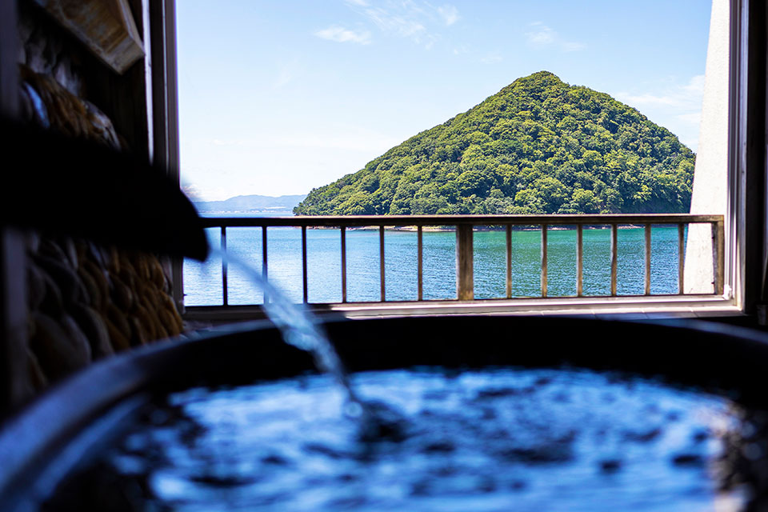
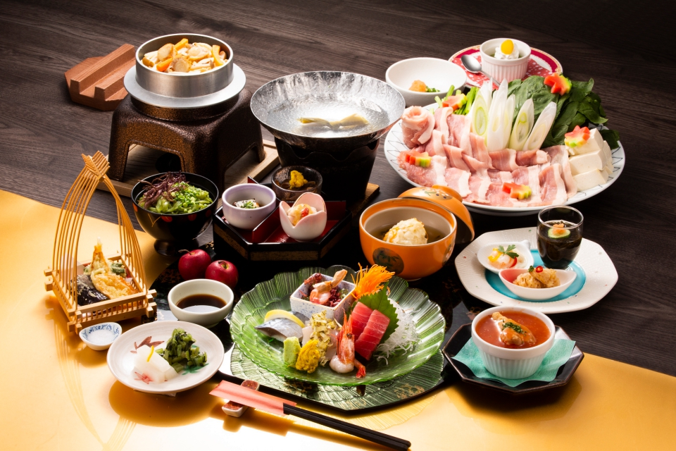
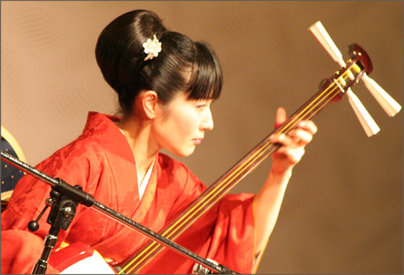

～青森の絶景と津軽三味線に酔いしれる～
絶景の宿 浅虫さくら観光ホテル (青森)
国道4号線沿いに立ち、浅虫温泉で唯一波打ち際にあるホテル。
その立地の良さを生かして、ロビーに一歩足を踏み入れると
パノラマのような陸奥湾が眼前に広がる。
絶景はロビーだけでなく、青森ヒバを使用した浴槽からも眺めることが可能。
食事は言わずもがな青森の海鮮が盛りだくさん。
青森県産の帆立を使用したシューマイに炊き込みご飯。季節の三点盛で大満足。
夕食後は津軽三味線の生演奏で〆れば言うことなし。